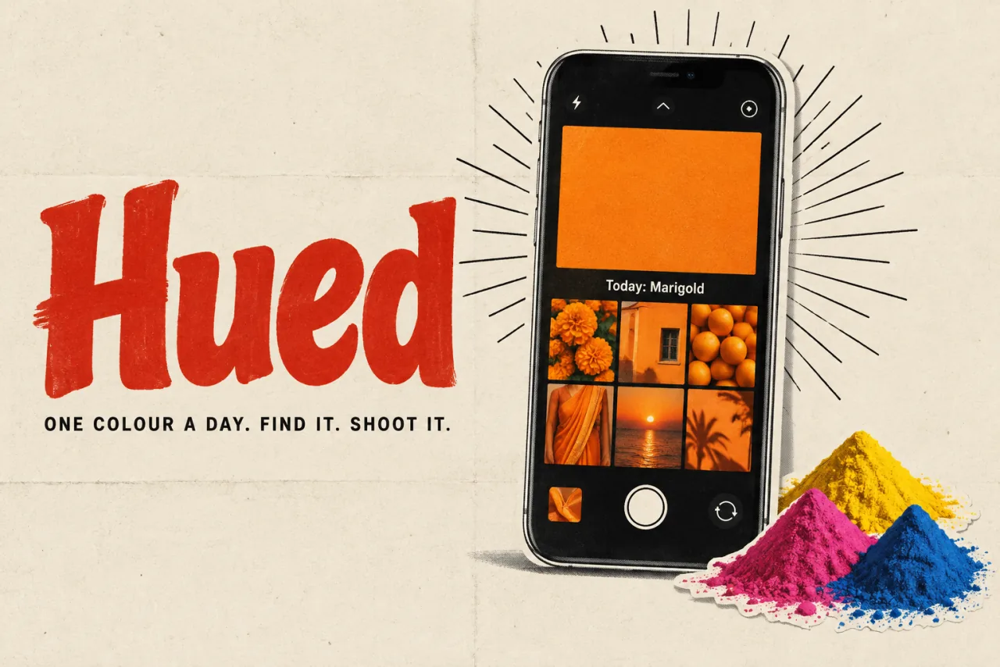
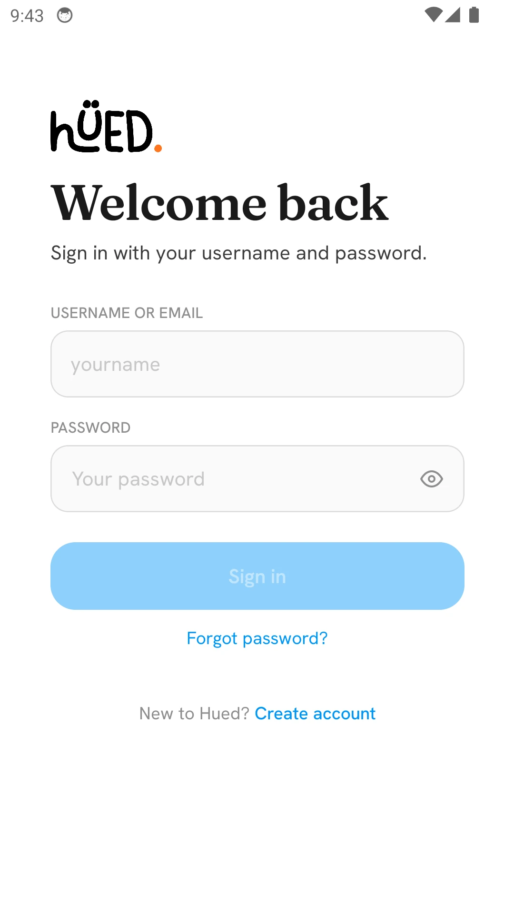

HuedProduct story · 4 min read
One colour. A reason to look closer.
A daily photography prompt with a shared constraint, on-device scoring, and a warm visual language.
Read the case study

Actual Android sign-in screen. The daily photography flow is described from the project documentation; no account or photographs were used for this capture.
View full size ↗01 The problem
How much structure helps creativity begin?
A broad prompt to be creative can be harder to act on than a small constraint. Hued gives everyone the same daily colour and asks them to find and photograph it in the real world. The product connects a simple creative action to a repeatable daily rhythm.
Designed for Person looking for a small creative prompt. Find a subject and share a personal interpretation.
User context Design assumption
Noticing everyday surroundings through one daily colour.
- The friction
- Scores and streaks can turn exploration into pressure.
- Design implication
- Let the photograph lead and keep feedback supportive.
Example situation · illustrative scenario. Imagine being asked to make something creative today. A blank prompt is wide open; one findable colour gives your attention somewhere specific to go.
02 The outcome
A little colour, interpreted differently.
I centred the app on a shared daily colour, a photograph and feedback on the attempt. The warm interface gives the photographs most of the attention; scores, the feed and streaks support the daily activity. Participation and the scoring experience still need user evaluation.
More about the experience
- One daily invitation. The product identity anchors a shared colour challenge.
- Interpretation stays personal. Local scoring is feedback, not a verdict on creativity.
03 The direction
A constraint with room for you
A small shared constraint gives the day a common starting point without prescribing the photograph.
Product artifact · daily prompt and scoring
My direction. I connected the daily colour to finding, photographing, and receiving feedback, while keeping the photographs central.
Process and product scope
I shaped the concept around one shared colour and a small creative invitation: notice it in the world, photograph it, and see other interpretations. The daily boundary needs a clear local explanation.
A quiet, warm interface keeps the photographs in front. Scores and streaks are supporting feedback; whether they encourage curiosity or pressure is a question for evaluation, not an established habit-formation result.
- 1
- shared daily colour
- 48
- colours in the documented palette
- On-device
- colour scoring
- Notice
Find the shared colour in the world.
- Capture
Make your own interpretation.
- Reflect
Use the feedback as guidance, with its limits visible.
04 Design decisions
Make the daily prompt easy to act on.
Open a decision to see the reasoning and trade-off.
01Make the prompt shared and specific
One date-derived colour creates a common constraint for the day.
Why this matters. A small, concrete invitation can make starting easier and make different responses interesting to compare.
The trade-off. A UTC boundary may feel surprising across time zones; the deadline needs to be understandable locally.
02Keep the creative result in the foreground
The feed emphasises photographs within a quiet, warm visual system.
Why this matters. The person’s interpretation of the colour should carry more attention than surrounding interface decoration.
The trade-off. Ranking and streaks can compete with exploration; their value needs to be judged from behaviour and feedback.
03Treat scoring as guidance with limits
Colour matching runs locally; suspicious-image heuristics are documented as tentative rather than proof.
Why this matters. A score can provide feedback without pretending to reliably determine how an image was made.
The trade-off. Lighting, camera processing, and scene composition affect colour. An unexplained penalty can feel arbitrary.
05 Reflection
A good prompt opens possibilities by making the first step small.
I want the prompt to encourage noticing things, not just protecting a streak. I would ask people what they chose to photograph and how they interpreted the score before deciding whether to make the competitive features more prominent.
What I would evaluate next proposed work
- compare how people interpret the prompt and score under different lighting conditions, including whether they understand a low score.
- repeat participation with self-reported creative value; evaluate deadline understanding across time zones.
An event page is only the beginning.